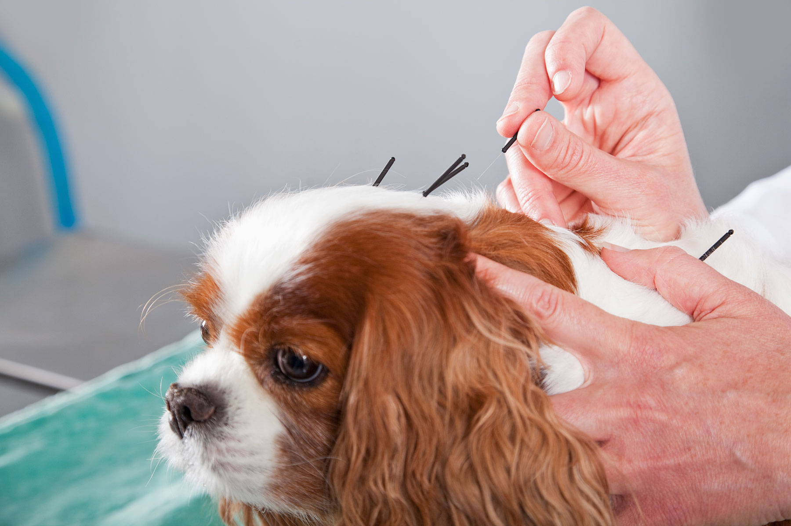

A long, happy life
We focus on holistic ways to help your pet live a long, happy life.
A holistic, in-home veterinary practice serving Clearwater, Dunedin & Palm Harbor, Florida - led by a veterinarian with more than four decades of experience in natural and integrative care.
Pet Health Alternatives was founded by Dr. Cheryl A. Caputo, a veterinarian since 1978 and a member of the AVMA and AHVMA. Certified in acupuncture and ozone therapy, she provides holistic, in-home veterinary care across the Clearwater, Florida area.
As lifelong pet lovers, we understand how deeply you love your animals. We walk with you through every stage - planning, treatment, and rehabilitation - and we'll always teach you how nutrition and exercise keep your pet well. We favor natural treatments, combining them with conventional medicine whenever it's the best path to healing.

More than four decades of veterinary experience - and a lifelong commitment to gentle, natural care.
Dr. Cheryl A. Caputo graduated from Ohio State University in 1978, with further study in Outpatient Care and Internal Medicine. She built and ran a veterinary clinic in Daleville, Virginia for 26 years - the first to offer alternative veterinary medicine in the Roanoke Valley.
In 2008 she moved to Florida and opened her house-call practice in the Clearwater area. She is a member of the AVMA and AHVMA, and is certified in Acupuncture (Chi Institute) and Ozone Therapy, with training in nutrition, supplements, homeopathy, and kinesiology.
She partners with the Animal Hospital of Dunedin and Day and Evening Pet Hospital for imaging, dentistry, surgery, and hospitalization.
Ohio State University, 1978 - further study in Outpatient Care & Internal Medicine. 26 years running her own clinic in Daleville, Virginia.
Certified in Acupuncture (Chi Institute) and Ozone Therapy; trained in nutrition, supplements, homeopathy, and kinesiology.
Member of the American Veterinary Medical Association (AVMA) and the American Holistic Veterinary Medical Association (AHVMA).
Partners with the Animal Hospital of Dunedin and Day and Evening Pet Hospital for imaging, dentistry, surgery, and hospitalization.
Six principles that guide how we care for every pet we treat.
We focus on holistic ways to help your pet live a long, happy life.
We don't give unnecessary vaccinations - every immunization is tailored to your pet's needs and lifestyle.
We watch your pet's immunity closely, because some vaccines protect far longer than expected.
We choose naturally derived products over chemicals whenever possible.
We take every question about your pet's health seriously.
Our caring team treats your pets like their own.
Talk to a holistic vet who treats your pet like family - and comes right to your home.